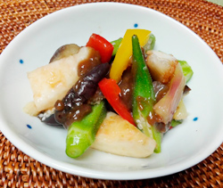

桃と夏野菜のクルミ和え
- 調理時間：30 分
- （一人当たり）
- カロリー：184kcal
- たんぱく質：4.3g
- 脂質：5.8g
- 炭水化物：31.9g
- 塩分：0.9g


＜2人分＞
- 白桃
- 1個
- ナス（乱切り）
- 1本
- オクラ
（ヘタを切り、斜め切り） - 3本
- パプリカ
（種をとって細切り） - 1/2個
- ミョウガ（縦に4等分）
- 2個
- ・クルミ
- 15g
- ・みそ
- 25g
- ・だし汁
- 大さじ2
- ・みりん
- 小さじ2
- ・砂糖
- 大さじ1
A


- 白桃は皮をむいて、食べやすい大きさに切り、塩水にさっとくぐらす。
- ナス、オクラ、パプリカ、ミョウガは下準備して、塩を入れた熱湯でかためにゆで、直ぐに冷やす。
醤油（分量外）を数滴ふって、下味をつけておく。 - A：クルミ味噌をつくる。
1.クルミはすり鉢で粗めにする。
（すり鉢がなければ、袋にいれてめん棒などで叩いて砕く）
2.フライパンに擂ったクルミを弱火で煎り、一旦取り出す。
3.同じフライパンに、みそ、だし汁、みりん、砂糖を入れて火にかけ、木べらでよく混ぜて練り上げる。
4.ツヤがでてきたらクルミをもどして全体をよく混ぜる。 - 食べる直前に、野菜と桃をクルミ味噌で和えていただく。
桃と夏野菜のクルミ和え
薬膳で果物は、五臓のはたらきを助けるといわれており、体調を整えるのには欠かせません。加熱調理することが多い野菜に比べ、果物は生のままで気軽に食べられ、酵素やビタミン類を補給できるのが利点です。水分を豊富に含んでいるので、まだまだ暑いこの時期に体を潤す効果が高いのも特徴です。桃は夏の果物の中では珍しい温性で、胃腸を冷やさないため、胃腸が弱い人にも安心です。みそに含まれる乳酸菌とＷ効果で、腸を潤し、胃腸の機能を助け、血のめぐりもよくします。